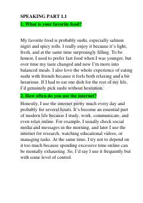

SFIELTS Speaking imtihoni uchun namunaviy javoblar va amaliy tavsiyalar to'plami.
Ushbu qo'llanma IELTS Speaking imtihonining barcha qismlari uchun namunaviy javoblar va strategiyalarni o'z ichiga oladi. Unda kundalik mavzular, rasmlarni tasvirlash va shaxsiy tajribani bayon qilish bo'yicha amaliy mashqlar keltirilgan.